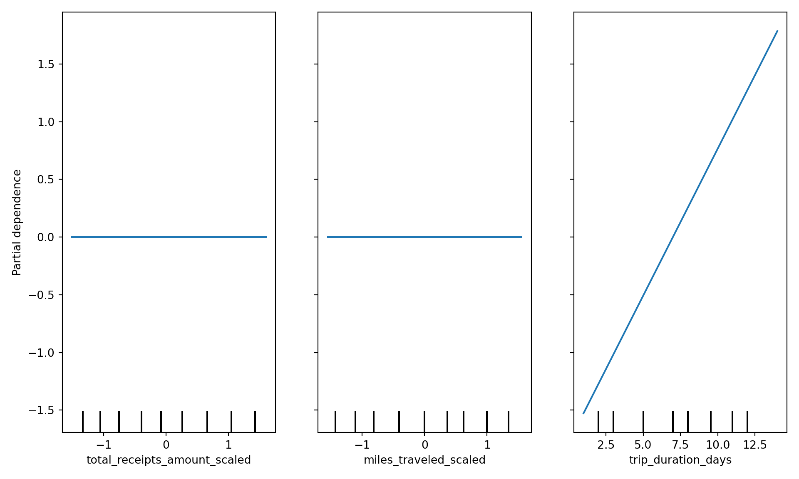
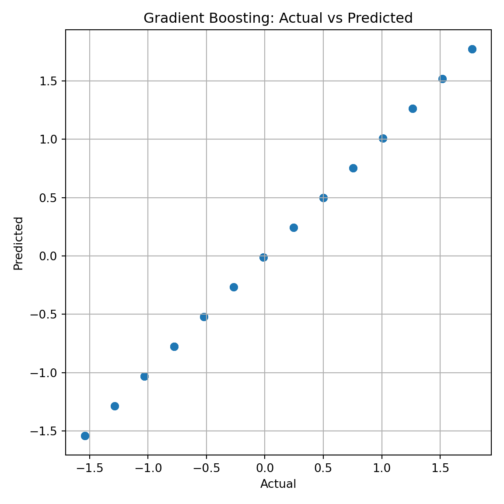
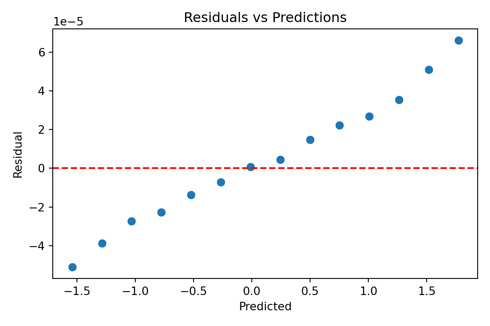

Harriet O’Brien, Vy Tran, Saniyah Khan, Rehinatu Usman
1 Introduction
The goal of this section is to understand how the trained models make predictions and to check whether the model behavior aligns with the patterns observed during EDA. Interpretability also helps confirm that the model is using features in a reasonable way and that its errors do not follow any strong pattern. This section includes: - Feature importance - Partial dependence plots - Actual vs. predicted - Residual analysis
These steps provide a clear overview of how reliable and transparent the final model is.
python: C:/Users/tuong/anaconda3/envs/mlclean/python.exe
libpython: C:/Users/tuong/anaconda3/envs/mlclean/python310.dll
pythonhome: C:/Users/tuong/anaconda3/envs/mlclean
version: 3.10.19 | packaged by Anaconda, Inc. | (main, Oct 21 2025, 16:41:31) [MSC v.1929 64 bit (AMD64)]
Architecture: 64bit
numpy: C:/Users/tuong/anaconda3/envs/mlclean/Lib/site-packages/numpy
numpy_version: 1.26.4
NOTE: Python version was forced by use_python() function
import pandas as pdimport numpy as npimport matplotlib.pyplot as pltimport seaborn as snsfrom sklearn.model_selection import train_test_splitfrom sklearn.ensemble import RandomForestRegressor, GradientBoostingRegressorfrom sklearn.metrics import mean_absolute_error, mean_squared_error, r2_scorefrom sklearn.inspection import PartialDependenceDisplay
3 2. Load processed features and recreate train–test split
Here we reload the processed dataset and recreate the exact same train/test split as the previous modeling file. This ensures the interpretability results match the final training conditions.
# Load the final processed feature matrixfeatures = pd.read_csv("../data/features_processed.csv")# Identify the correct target column (scaled version)target_col ="trip_duration_days_scaled"# Recreate X and yy = features[target_col]X = features.drop(columns=[target_col])# Recreate the same train-test split used in the model fileX_train, X_test, y_train, y_test = train_test_split(X, y, test_size=0.2, random_state=42)# Re-train the two models for interpretabilityrf = RandomForestRegressor(random_state=42)rf.fit(X_train, y_train)
RandomForestRegressor(random_state=42)
In a Jupyter environment, please rerun this cell to show the HTML representation or trust the notebook. On GitHub, the HTML representation is unable to render, please try loading this page with nbviewer.org.
In a Jupyter environment, please rerun this cell to show the HTML representation or trust the notebook. On GitHub, the HTML representation is unable to render, please try loading this page with nbviewer.org.
Random Forest provides feature importance scores based on how much each variable reduces prediction error across the trees. This gives a simple but useful view of which features matter the most.
4 3. Feature Importance
Feature importance tells us which input variables influenced predictions the most.
Higher values mean the feature had a stronger effect on predictions. We compare this ordering with what we saw during EDA to see if the model uses features logically.
<sklearn.inspection._plot.partial_dependence.PartialDependenceDisplay object at 0x000001A575F86500>
plt.tight_layout()plt.show()

The PDPs confirm the feature importance results:
When trip duration increases, predicted reimbursement increases steadily. The other features remain mostly flat, meaning they do not meaningfully change model output. This suggests our engineered cost features did not add additional predictive power.
6 5. Actual vs Predicted
This tells us how close model predictions are to the real test values.
gb_preds = gb.predict(X_test)plt.figure(figsize=(6,6))plt.scatter(y_test, gb_preds, alpha=0.5)plt.xlabel("Actual")plt.ylabel("Predicted")plt.title("Gradient Boosting: Actual vs Predicted")plt.grid(True)plt.tight_layout()plt.show()

The points roughly follow a diagonal line, meaning predictions are fairly close to real values. Some spread exists, especially for longer trips, which indicates the model performs reasonably well but is not perfect.
7 6.Residual Distribution + Residuals vs Predictions
Residuals help us check whether there is any bias or cosistent error pattern.
plt.figure(figsize=(6,4))plt.scatter(gb_preds, residuals, alpha=0.5)plt.axhline(0, color="red", linestyle="--")plt.xlabel("Predicted")plt.ylabel("Residual")plt.title("Residuals vs Predictions")plt.tight_layout()plt.show()

The residuals appear roughly centered around zero, with no strong bias pattern. A slightly uneven spread suggests uncertainty increases for longer trip durations, but overall, there are no systematic errors, meaning the model is making fair and consistent predictions.
8 Sumary
Overall, the interpretability results are consistent with what we observed during EDA. The model mainly relies on trip duration, which makes sense given the structure of the reimbursement data. While uncertainty slightly increases for longer trips, there is no clear bias or systematic pattern in the errors. These findings suggest that the model is behaving logically, using features in a reasonable way, and producing predictions that align with domain expectations.